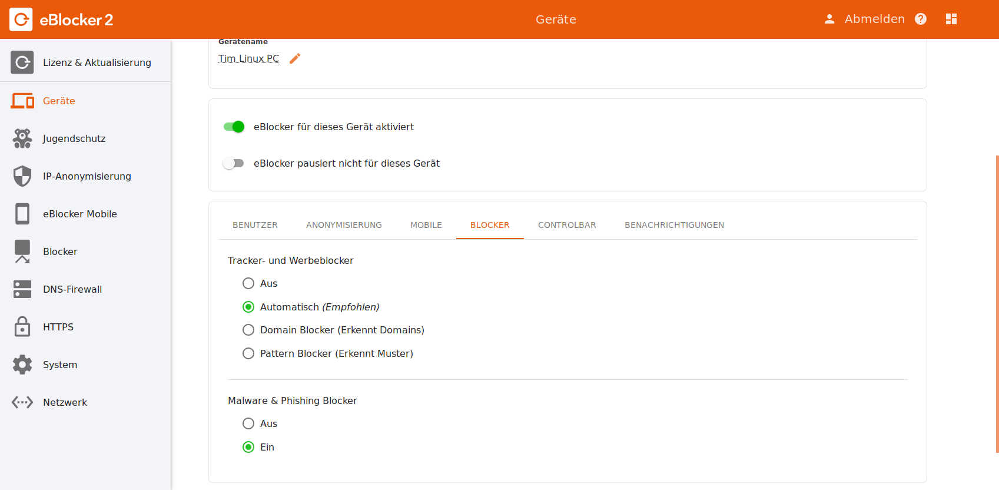

eBlocker Hilfe > FAQs > Allgemeine Fragen
(gültig für eBlocker Pro und eBlocker Family)
Ab der eBlocker Version 2 gibt es für die eBlocker Versionen Pro und Family neben den Pattern Blocker zusätzlich die Domain Blocker. Pro Gerät können Sie nun in den eBlocker Einstellungen auswählen, welche Blocker Methode Sie einsetzten möchten. Hier können Sie auch auswählen, ob die Malware & Phishing Blocker pro Gerät deaktiviert oder aktiviert werden.
Tipp:
Wir empfehlen die Einstellung "Automatisch" für die Blocker Methode. Der eBlocker kann dann selber entscheiden, welche Blocker Methoden für dieses Gerät eingesetzt werden soll.

Domain Blocker
Mit dieser Blocker Funktion blockiert der eBlocker Tracker und trackende Werbung auf Basis der Domainabfragen. Das heißt, dass der eBlocker das Gerät oder den Browser daran hindert, eine ganz bestimmte Domain zu erreichen. Dabei spielt es keine Rolle, ob die Domain über das http- oder https-Protokoll zu erreichen ist.
Diese Blockiermethode ist sehr beliebt, um Tracker und trackende Werbung zu unterdrücken.
Vorteile:
Nachteil:
Pattern Blocker
Mit dieser Blocker Funktion blockiert der eBlocker die Tracker und trackende Werbung auf Basis von Mustern (Englisch „Pattern“). Dabei analysiert der eBlocker die Webseite und sucht nach bekannten Mustern im Quellcode der Seite. Damit der eBlocker alle Webseiten analysieren kann, muss die eBlocker HTTPS Funktion aktiviert und das eBlocker Zertifikat bei jedem Gerät hinterlegt worden sein.
Vorteil:
Nachteile:
Malware & Phishing Blocker
Als Malware bezeichnet man Computerprogramme, die entwickelt wurden, um unerwünschte und gegebenenfalls schädliche Funktionen auszuführen.
Unter dem Begriff Phishing versteht man Versuche, über zum Beispiel Webseiten an persönliche Daten eines Internetnutzers zu gelangen.
Der eBlocker kann Sie mit seinem Malware & Phishing Blocker vor dem Aufruf solcher Webseiten schützen.